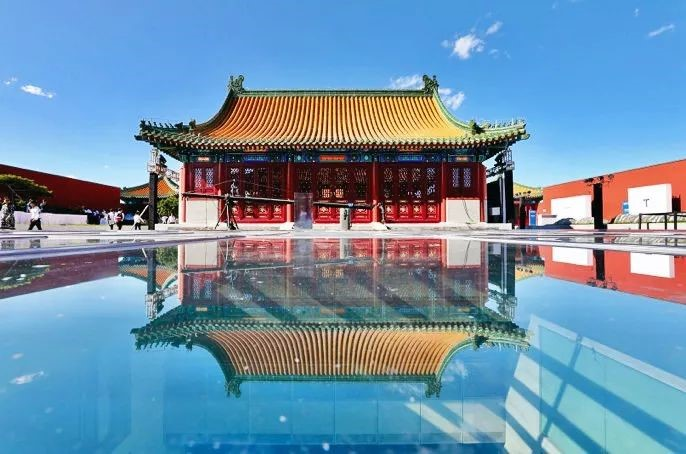
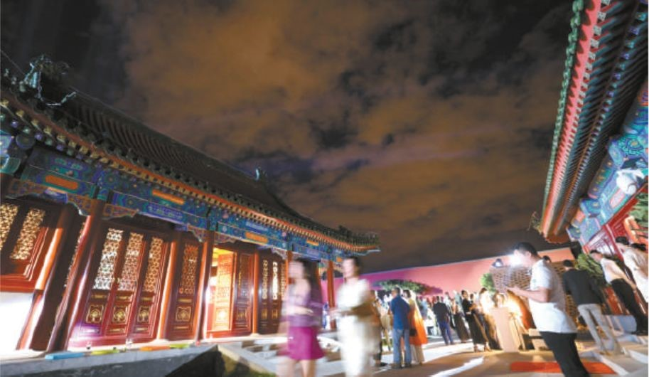

隆福寺蝶变 铸老城复兴金名片
来源：北京东城
昨晚（8月29日），有着600年历史的隆福寺地区再次成为北京的焦点。位于隆福大厦顶层，面积达6000平方米的隆福文化中心首次开放，举办了英国著名艺术家大卫·霍克尼在华首次大型个展。
晴朗夜空下、朗朗指尖流淌的琴声中，四座仿古大殿和三个室外庭院让人忘却这是距离地面45.59米的半空中。绕着略带禅意的文化中心露台一周，可以眺望到故宫、中国美术馆、中国尊、奥林匹克塔等或近或远的北京地标建筑。俯视，占地约9.5万平方米的隆福寺四合院风貌区带着烟火气在柔和的灯光中即将进入梦乡。
自2012年北京国资公司与东城区委区政府联手实施对隆福寺地区的风貌保护和城市更新以来，国资公司聘请境内外知名专家和规划设计团队反复规划论证，如今隆福寺项目一期终于蝶变为融合了城市书房、美术馆、艺术社区、文化中心、特色餐饮、共享办公等多种业态的全新文创生态圈。这里，也成为落实首都城市战略定位和北京城市总体规划（2016年-2035年）的新名片，为北京核心城区增加了一处市民休闲体验目的地。
功能业态大换血
整个隆福寺项目地处东城区东四片区，北至钱粮胡同、南至东四西大街、西至美术馆东街、东至东四北大街，占地面积约15.5公顷，包含隆福大厦、隆福广场、长虹影城等著名建筑，以及建设于上世纪60年代至90年代的多个办公附属设施和相邻的胡同风貌区。
一期工程改造了隆福大厦和隆福寺北里。隆福大厦不仅建筑风貌有了明显提升，功能业态也由过去的百货商场转变为文化金融企业办公场所。隆福寺北里，则由过去的商场仓库、食堂、配电楼等配套设施变身创意园区，实现了功能优化再造，原址品质升级。
占地2189平方米的原食堂，由收藏家林瀚等人接手，被擅长空间改造和人文关怀的日本建筑师青山周平及其工作室改造为木木艺术社区。它外表看起来是个颇具太空感的银色盒子，内里却是融美术展览、艺术影院、艺术衍生品商店、创意活动等于一体的综合空间。
原来堆放各式抢手生活用品的仓库，则变成了5层楼的文创办公空间，引入著名的共享办公品牌we work。来这里工作的人，只需要按日付费购买一个工位，就可以享受办公空间。而原来的职工宿舍，如今也迎来著名建筑师张永和的非常建筑事务所入驻，另有“城市文化空间”创意品牌即将入驻。
自带流量成新地标
“如今入驻隆福寺的文创品牌，大都自带流量，吸引了许多潮人来到隆福寺。”北京新隆福文化投资有限公司相关负责人介绍，团队为找到园区内一处空间的新主人，大约洽谈了500多位客户，经过激烈竞争入驻的机构各有独特的文化和生活态度。
于7月开始试营业的更读书社，与东城区图书馆合作，将售书与图书借阅相结合，利用充满创意的空间开展了中美文化与乡村音乐交流、“我和我的祖国”申奥成功18周年庆典、吴晓波书友会线下社群活动等丰富的文化活动，吸引了杨影、毕文静、刘玉坤等世界冠军，以及美国乡村音乐人马克·力文等来到这里与读者交流。
就在最近几天，隆福寺北里还先后迎来苏苏越南菜、京A京酿等多个特色小店开张，一时热闹非常。
博物馆群落呼之欲出
未来三年，改造还将继续。
站在隆福文化中心东侧俯瞰隆福项目地块，可见东南方向的长虹影院正处于改造前夜特有的安静之中。“这里将被改成为一座飞行影院，变为集飞行影院、VR互动娱乐、全息投影秀、主题餐厅、文创商品于一体的综合娱乐空间。向南，隆福广场C座，将与故宫合作打造成为紫禁城外体验故宫文化的新基地。而紧邻东南方向地铁的一片区域，正覆盖着绿色网布，等待着开工建设。李兴钢、崔愷、朱小地、王辉等当今中国建筑设计界的领军人物，将在这里设计7个创意院落，并与大英博物馆、VA博物馆等世界知名博物馆展开深度合作，汇聚世界文明精粹。
北京国资公司董事长岳鹏表示，未来三年，隆福寺将继续打造“北京老城复兴金名片”，努力成为传统文化与现代文明交相辉映，中华文化与世界文明协调共融的首都文化新中心。